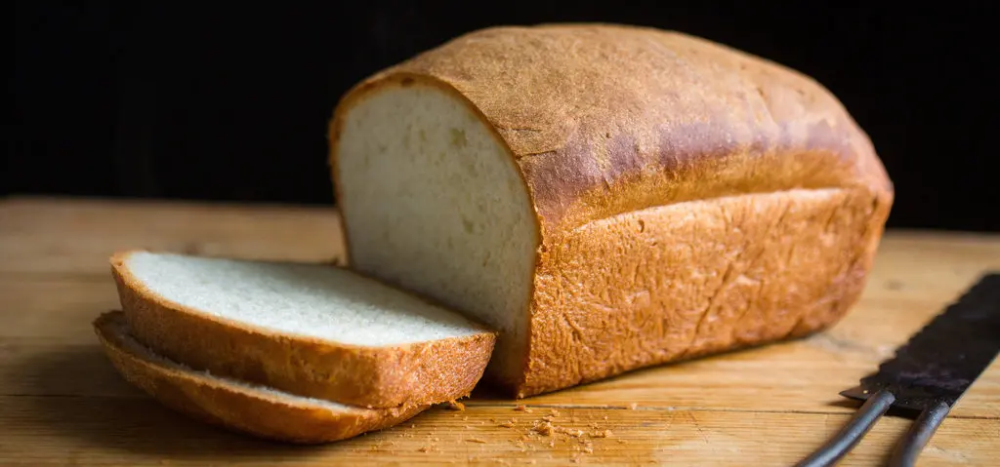

HOME
Homemade Bread

Description
This homemade bread is soft, fluffy, and perfect for sandwiches, toast, or simply enjoying with butter. Made with simple pantry ingredients like flour, yeast, water, and salt, this bread has a deliciously golden crust and a tender, airy interior. It's an easy recipe that delivers bakery-quality results right from your own kitchen.
Ingredients
- 3 ½ cups all-purpose flour
- 1 packet (2 ¼ tsp) active dry yeast
- 1 ¼ cups warm water (110°F/45°C)
- 2 tbsp sugar
- 1 tsp salt
- 2 tbsp olive oil or melted butter
Directions
- In a small bowl, dissolve the sugar in warm water and sprinkle the yeast on top. Let it sit for 5-10 minutes until foamy.
- In a large bowl, combine flour and salt. Add the yeast mixture and olive oil, then mix until a dough forms.
- Knead the dough on a floured surface for about 8-10 minutes until smooth and elastic.
- Place the dough in a greased bowl, cover with a clean cloth, and let it rise in a warm place for 1 hour or until doubled in size.
- Punch down the dough and shape it into a loaf. Place in a greased loaf pan and let it rise for another 30 minutes.
- Preheat the oven to 375°F (190°C). Bake for 25-30 minutes or until golden brown and sounds hollow when tapped.
- Let cool before slicing and serving.